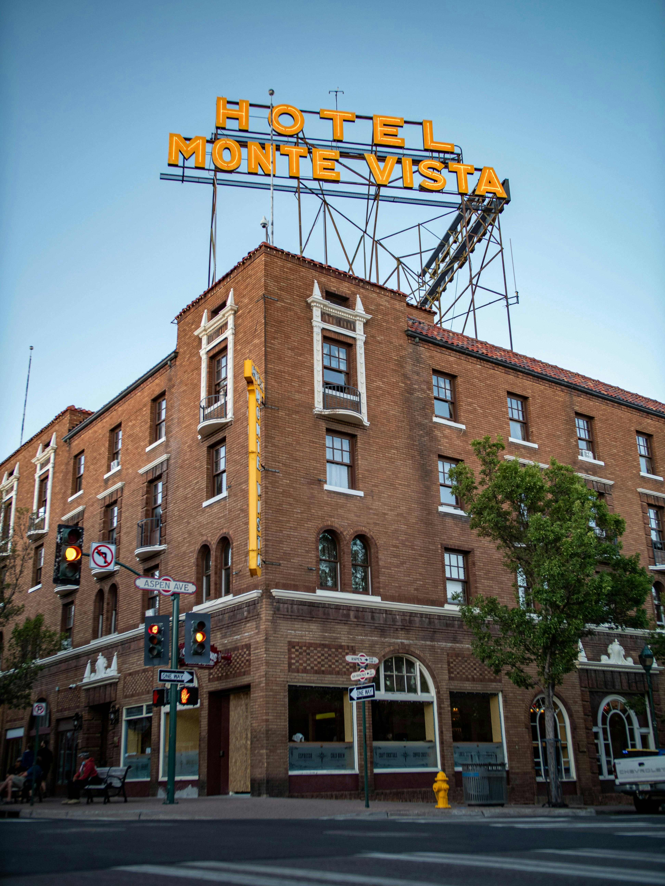
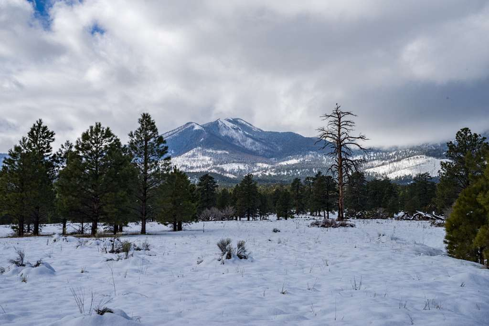

This historic hotel, located in the heart of downtown Flagstaff, has
been a cultural and architectural landmark since the 1920s. Known
for its distinctive neon sign and storied past, the
Hotel Monte Vista has hosted countless visitors
over the decades, from celebrities to travelers along Route 66. The
building’s classic design and vibrant history add to the charm of
Flagstaff’s downtown area.

This serene winter landscape showcases the
San Francisco Peaks, the highest mountain range in
Arizona. Covered in snow and framed by towering ponderosa pines, the
scene is a perfect example of Flagstaff’s unique combination of
forested beauty and high-altitude environment. These mountains are
not only picturesque but also offer recreational opportunities like
skiing at the Arizona Snowbowl and hiking year-round.